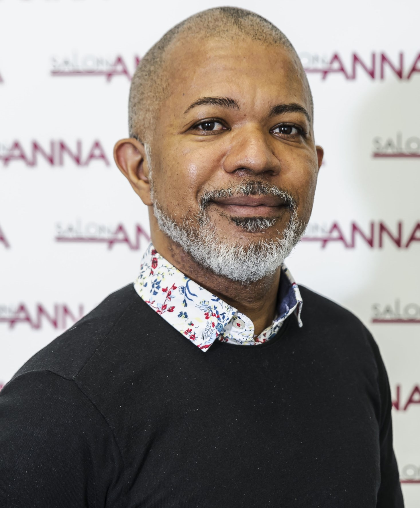

Eddie is Brazilian and started working as a hairdresser at the age of 17. At the age of 19, she had already opened his first hair salon in his homeland. Living in Finland for almost 20 years, today the hairdresser works at Salon Anna, which is located in Kamppi, an area in the heart of the city of Helsinki. Eddie has been in this field for over 30 years taking care of all types of hair.
